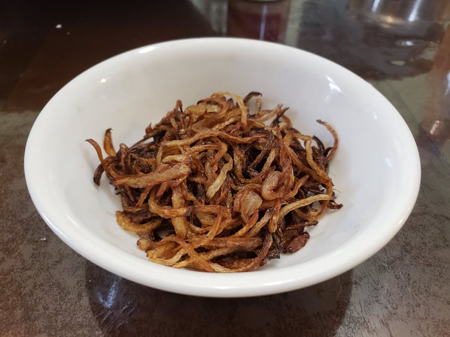

Birista

Ingredients:
- 2 Onions, finely sliced
- Oil for frying
Instructions:
- Heat up about an inch of oil in a large wok over medium heat.
- Add the onion and allow them to fry until browned and crispy. Stir occasionally to make sure they're frying evenly.
- Remove the onions from the oil and place onto a paper towel lined plate.